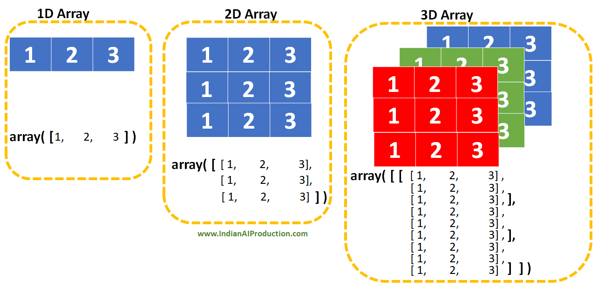
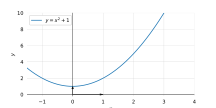
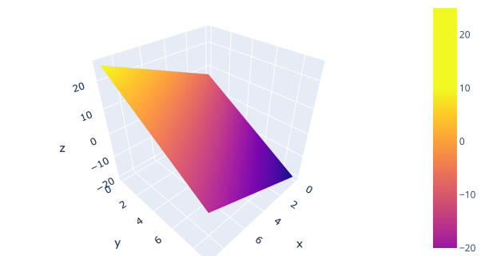
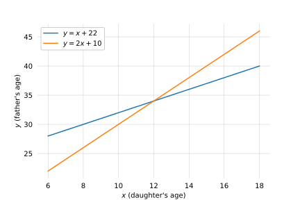
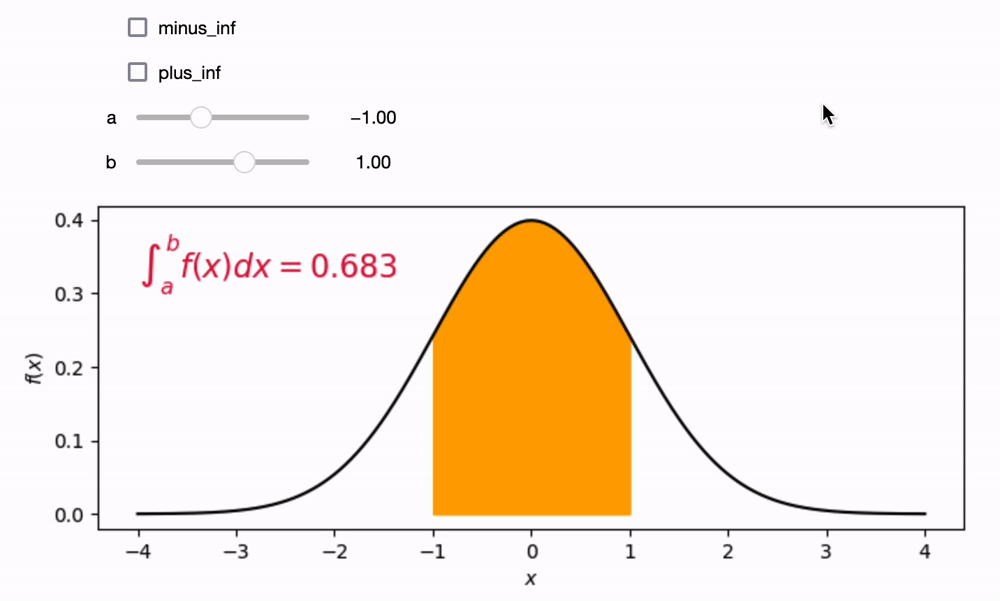

Algebra & Calculus
Maîtriser les fondements mathématiques utilisés en data science — algèbre linéaire (vecteurs, matrices, produit scalaire) et calcul différentiel (dérivées, dérivées partielles, gradient, intégrales) — en les appliquant avec NumPy.
📋 Cheatsheet — Algebra & Calculus
NumPy — bases
import numpy as np
A = np.array([[1, 2], [3, 4], [5, 6]]) # matrice 3×2
A.shape # → (3, 2) : (nb_lignes, nb_colonnes) — très important !
A.size # → 6 : nombre total d'éléments
A.ndim # → 2 : nombre de dimensions
A.dtype # → dtype('int64') : type des éléments
A[1, 1] # → 4 : indexing (ligne 1, colonne 1)
A[:2, :] # → [[1,2],[3,4]] : slicing (2 premières lignes)
A > 2 # → masque booléen (True/False par élément)
A[A > 2] # → array([3, 4, 5, 6]) : boolean indexingVecteurs
u = np.array([1, 2, 3]) # vecteur 1D, shape (3,)
v = np.array([4, 5, 6])
u + v # → [5, 7, 9] : addition élément par élément
2 * u # → [2, 4, 6] : multiplication par scalaire
## Norme L2 (distance euclidienne depuis l'origine)
np.linalg.norm(u) # → √(1²+2²+3²) = 3.74
## Distance L2 entre deux vecteurs
np.sqrt(np.sum((u - v)**2)) # → ‖u - v‖₂
## Produit scalaire (dot product) — retourne un scalaire
np.dot(u, v) # = 1*4 + 2*5 + 3*6 = 32
u.dot(v) # même résultat
u @ v # même résultat (opérateur @)Matrices
A = np.array([[1, 2, 3], [0, 1, 2]]) # shape (2, 3)
B = np.array([[4, 1], [5, 0], [6, 4]]) # shape (3, 2)
A.T # transposée de A : shape (3, 2)
A + A # addition élément par élément (formes identiques requises)
3 * A # multiplication par scalaire
## Produit matriciel — règle : colonnes_A = lignes_B
np.matmul(A, B) # → shape (2, 2)
A @ B # même résultat
## Matrices carrées
np.eye(3) # matrice identité 3×3
np.linalg.inv(M) # matrice inverse (M doit être carrée et inversible)
np.linalg.det(M) # déterminant (= 0 → non inversible)
np.linalg.matrix_rank(M) # rang (= nb colonnes → plein rang → inversible)Résoudre un système linéaire Ax = b
A = np.array([[1, -1], [1, -2]]) # matrice des coefficients
b = np.array([[22], [10]]) # vecteur des constantes
## Méthode 1 : inversion de matrice
np.linalg.inv(A) @ b # → [[34.], [12.]]
## Méthode 2 : solve (plus stable numériquement)
np.linalg.solve(A, b) # → même résultatFonctions et visualisation
import matplotlib.pyplot as plt
f = lambda x: x**2 + 1 # fonction lambda
x = np.linspace(-2, 2, 100) # 100 points entre -2 et 2
y = f(x) # évaluation vectorisée (pas de for loop !)
plt.plot(x, y) # tracé de la courbe
plt.show()
## Fonction bivariée (surface 3D)
import plotly.graph_objects as go
g = lambda x, y: 2*x - 3*y + 7
x, y = np.meshgrid(range(10), range(10)) # grille de points
z = g(x, y)
go.Figure(go.Surface(x=x, y=y, z=z)).show()Dérivées et gradient
## Dérivée numérique approchée
h = 1e-5
f_prime_a = (f(a + h) - f(a)) / h # pente locale en a ≈ f'(a)
## Gradient d'une fonction multivariée → vecteur des dérivées partielles
## ∇h(p) = [∂h/∂x₁, ∂h/∂x₂, ..., ∂h/∂xₙ]
## Utilisé en optimisation (ex : gradient descent)⚠️ Récapitulatif — Erreurs clés à éviter
Confondre shape (3,) et shape (3,1) — vecteur 1D vs colonne 2D
❌ u = np.array([1, 2, 3]) → shape (3,) : vecteur 1D plat
✅ u_col = np.array([[1], [2], [3]]) → shape (3, 1) : vecteur colonne — nécessaire pour certains produits matriciels
Multiplier deux matrices avec des dimensions incompatibles
❌ B @ A avec B shape (3, 4) et A shape (2, 3) → ValueError
✅ Le produit A @ B est valide ssi colonnes(A) = lignes(B) → résultat de shape (lignes(A), colonnes(B))
Utiliser une boucle for là où NumPy peut vectoriser
❌ for x in range(5): y = f(x) — lent, verbeux
✅ x = np.arange(5); y = f(x) — vectorisé, rapide, concis
Confondre produit scalaire et multiplication élément par élément
❌ u * v → [4, 10, 18] : multiplication élément par élément (Hadamard), retourne un vecteur
✅ u @ v ou np.dot(u, v) → 32 : produit scalaire, retourne un scalaire
Inverser une matrice non carrée ou de déterminant nul
❌ np.linalg.inv(A) si A n'est pas carrée ou si np.linalg.det(A) == 0 → LinAlgError
✅ Vérifier : np.linalg.matrix_rank(A) doit égaler le nombre de colonnes
1) Recap NumPy
1.1 Tableaux n-dimensionnels
NumPy est centré sur les tableaux n-dimensionnels (numpy.ndarray).

import numpy as np
A = np.array([[1, 2],
[3, 4],
[5, 6]]) # matrice 3×2
A.shape # → (3, 2)
A.size # → 6
A.ndim # → 2
A.dtype # → dtype('int64')
A[1, 1] # → 4 : indexing
A[:2, :] # → [[1,2],[3,4]] : slicing
A > 2 # → masque booléen
A[A > 2] # → array([3, 4, 5, 6]) : boolean indexingAvant d'utiliser une boucle for, demande-toi : peut-on le faire à la NumPy ? — opérations vectorisées, plus rapides et plus lisibles. La même logique s'applique à pandas.
2) Algèbre
2.1 Fonctions
Une fonction est une application qui associe à chaque élément d'un ensemble un unique élément d'un second ensemble :
$f : \mathbb{R} \to \mathbb{R}, \quad f(x) = x^2 + 1$
## Définition classique ou lambda
square_plus_one = lambda x: x**2 + 1
## Évaluation vectorisée (pas de for loop !)
x = np.arange(5) # → [0, 1, 2, 3, 4]
y = square_plus_one(x) # → [1, 2, 5, 10, 17]
## Tracé
x = np.linspace(-1, 2, 100)
plt.plot(x, square_plus_one(x))
plt.show()
Types de fonctions :
| Type | Exemple | Propriété |
|---|---|---|
| Identité | f(x) = x | Droite diagonale |
| Linéaire | f(x) = mx + b | Droite : m = pente, b = intercept |
| Non-linéaire | f(x) = x² + 1 | Courbe |
| Inverse f⁻¹ | f⁻¹(f(x)) = x | Symétrique à f par rapport à y = x |
Fonctions multivariées :
$f : \mathbb{R}^2 \to \mathbb{R}, \quad f(x_1, x_2) = 2x_1 - 3x_2 + 7$
import plotly.graph_objects as go
fun = lambda x, y: 2*x - 3*y + 7
x, y = np.meshgrid(range(10), range(10))
z = fun(x, y)
go.Figure(go.Surface(x=x, y=y, z=z)).show()
2.2 Équations et systèmes
Exemple : problème père/fille
$\begin{cases} y = x + 22 \\ y + 10 = 2(x + 10) \end{cases} \implies \begin{cases} y = x + 22 \\ y = 2x + 10 \end{cases}$
Résolution graphique : l'intersection des deux droites donne la solution unique.

→ x = 12 ans (fille), y = 34 ans (père)
2.3 Vecteurs
2.3.1 Définition et notation
$\mathbf{a} = \begin{bmatrix} 1 \\ 2 \end{bmatrix} \in \mathbb{R}^2 \qquad \mathbf{u} = \begin{bmatrix} 1 \\ 2 \\ 3 \end{bmatrix} \in \mathbb{R}^3 \qquad \mathbf{x} = \begin{bmatrix} x_1 \\ x_2 \\ \vdots \\ x_n \end{bmatrix} \in \mathbb{R}^n$
Un vecteur peut être vu à la fois comme une séquence de n nombres et comme un point dans un espace n-dimensionnel. Chaque ligne d'un DataFrame est un vecteur dans l'espace des features.
u = np.array([1, 2, 3]) # shape (3,)
u_row = np.array([[1, 2, 3]]) # shape (1, 3) — vecteur ligne
u_col = np.array([[1], [2], [3]]) # shape (3, 1) — vecteur colonne
u + v # → [5, 7, 9]
2 * u # → [2, 4, 6]2.3.2 Norme et distance
Norme L2 (distance depuis l'origine) :
$\|\mathbf{a}\|_2 = \sqrt{\sum_{i=1}^n a_i^2}$
Distance L2 entre deux vecteurs :
$\|\mathbf{b} - \mathbf{a}\|_2 = \sqrt{\sum_{i=1}^n (b_i - a_i)^2}$
Distance L1 (Manhattan) :
$\|\mathbf{b} - \mathbf{a}\|_1 = \sum_{i=1}^n |b_i - a_i|$
a = np.array([1, 2, 3, 4])
b = np.array([5, 5, 5, 5])
np.linalg.norm(b - a) # → 5.477 : distance L2
np.sqrt(np.sum((b - a)**2)) # → 5.477 : même résultat manuel2.3.3 Produit scalaire (dot product)
$\mathbf{a} \cdot \mathbf{b} = \sum_{i=1}^n a_i b_i = \|\mathbf{a}\|_2 \times \|\mathbf{b}\|_2 \times \cos\theta$
| Cas | Valeur |
|---|---|
| Vecteurs orthogonaux | a · b = 0 |
| Vecteurs parallèles (même sens) | a · b = ‖a‖ × ‖b‖ (maximum) |
np.dot(u, v) # → 32
u @ v # → 32 (opérateur @)cos θ (cosine similarity) est très utilisé en NLP pour mesurer la similarité entre représentations vectorielles de textes.
👉 Better Explained — dot product
2.4 Matrices
$A_{(m \times n)} = \begin{bmatrix} a_{1,1} & \cdots & a_{1,n} \\ \vdots & \ddots & \vdots \\ a_{m,1} & \cdots & a_{m,n} \end{bmatrix}$
A.T # transposée
A + B # addition (formes identiques)
3 * A # scalaire × matrice
A @ B # produit matriciel : colonnes(A) = lignes(B) requis
np.eye(3) # matrice identité I₃
np.linalg.inv(M) # inverse M⁻¹
np.linalg.det(M) # déterminant (= 0 → non inversible)
np.linalg.matrix_rank(M) # rangLe produit matriciel n'est pas commutatif : AB ≠ BA en général.
👉 3Blue1Brown — Linear transformations and matrices
2.5 Produit matriciel × Data Science
Estimer le prix d'un appartement :
$y = a_1 x_1 + \cdots + a_n x_n = \mathbf{a} \cdot \mathbf{x}$
Estimer les prix de plusieurs appartements :
$\mathbf{y} = \mathbf{a} \cdot X$
Effectuer plusieurs opérations sur plusieurs données :
$Y = A \cdot X$
C'est pourquoi les GPUs adorent la multiplication matricielle : ils parallélisent massivement ces opérations — crucial pour le deep learning.
Résoudre Ax = b avec l'algèbre matricielle :
$\mathbf{x} = A^{-1} \cdot \mathbf{b}$
A = np.array([[1, -1], [1, -2]])
b = np.array([[22], [10]])
np.linalg.inv(A) @ b # → [[34.], [12.]]Complexité computationnelle — Big O :
| Complexité | Exemple |
|---|---|
| O(1) | Accéder au premier élément d'une liste |
| O(log n) | Recherche dichotomique |
| O(n) | Boucle simple |
| O(n log n) | Tri d'une liste |
| O(n²) | Double boucle for |
| O(n³) | Inversion de matrice naïve |
| O(2ⁿ) | Brute force |
👉 Towards Data Science — Time Complexity
[Untitled](Algebra%20&%20Calculus/Untitled%203274e4108246805ab32cc21d55549ba8.csv)
3) Calcul différentiel
3.1 Dérivées
La dérivée d'une fonction en un point mesure la pente locale :
$f'(a) = \frac{df}{dx}(a) = \lim_{h \to 0} \frac{f(a+h) - f(a)}{h}$

La dérivée est utilisée en optimisation : minimiser une fonction de coût (ex: MSE) = trouver où la dérivée est nulle.
3.2 Dérivées partielles et gradient
Pour g(x, y), on fixe toutes les variables sauf une :
$\frac{\partial g}{\partial x}(x_A, y_A) = \lim_{h \to 0} \frac{g(x_A + h, y_A) - g(x_A, y_A)}{h}$
fun = lambda x, y: x**2 - y**2
x, y = np.meshgrid(np.linspace(-1, 1, 100), np.linspace(-1, 1, 100))
z = fun(x, y)
go.Figure(go.Surface(x=x, y=y, z=z)).show()Le vecteur gradient rassemble toutes les dérivées partielles :
$\nabla h(\mathbf{p}) = \begin{bmatrix} \frac{\partial h}{\partial x_1}(\mathbf{p}) \\ \vdots \\ \frac{\partial h}{\partial x_n}(\mathbf{p}) \end{bmatrix}$
Le gradient pointe dans la direction de la plus forte montée. La descente de gradient (gradient descent) se déplace dans le sens opposé pour minimiser une fonction de coût — c'est le moteur de l'entraînement des modèles ML.
3.3 Intégrales
$\int_a^b f(x)\, dx = \text{aire sous la courbe } y = f(x) \text{ entre } a \text{ et } b$

En data science, les intégrales interviennent dans les distributions de probabilité : ∫ PDF(x) dx sur un intervalle = probabilité d'observer une valeur dans cet intervalle.
📚 Bibliographie
- 👉 Hadrien Jean — Linear Algebra Series (blog)
- 👉 Hadrien Jean — Essential Math for Data Science (O'Reilly)
- 👉 3Blue1Brown — Essence of Linear Algebra (3h)
- 👉 3Blue1Brown — Essence of Calculus (4h)
- 👉 Better Explained — Dot Product
- 👉 Towards Data Science — Time Complexity
- 👉 Lecture notebook (teachers)
🚀 Challenges
- Implémenter les opérations vectorielles et matricielles avec NumPy
- Résoudre des systèmes d'équations linéaires avec l'algèbre matricielle
- Visualiser des fonctions en 2D et 3D avec matplotlib et plotly
🧭 Introduction
En data science, on ne travaille presque jamais sur une seule valeur isolée. On manipule des listes de nombres (des vecteurs), des tableaux de données (des matrices), et on cherche en permanence à optimiser quelque chose — réduire une erreur, maximiser une précision. C'est exactement à ça que servent l'algèbre linéaire et le calcul différentiel.
Pourquoi c'est indispensable ?
- Un modèle de machine learning reçoit des données sous forme de matrices et produit des prédictions grâce à des multiplications matricielles.
- Entraîner un modèle, c'est résoudre un problème d'optimisation — et l'outil central est le gradient.
- Comprendre ces maths te permet de lire les formules des algorithmes, de déboguer tes modèles, et de ne pas être perdu face aux notations scientifiques.
À retenir absolument :
1. Un vecteur = une liste ordonnée de nombres (ex : les caractéristiques d'un appartement).
2. Une matrice = un tableau de vecteurs (ex : ton dataset entier).
3. Le produit scalaire mesure la "ressemblance" entre deux vecteurs.
4. La dérivée mesure la pente d'une courbe en un point donné.
5. Le gradient est la boussole qui indique dans quelle direction une fonction monte le plus vite.
Analogie fil rouge : imagine que chaque appartement est décrit par 3 chiffres : surface, nombre de pièces, distance au métro. Cet appartement est un vecteur à 3 composantes. Ton dataset de 1000 appartements est une matrice de 1000 lignes et 3 colonnes. Toute la data science consiste à faire des opérations sur ces tableaux.
Mini-plan du cours :
- NumPy — l'outil de base pour manipuler tableaux et matrices en Python
- Algèbre — fonctions, vecteurs, matrices, produit scalaire
- Calcul différentiel — dérivées, gradient, intégrales
1. NumPy — Manipuler des tableaux efficacement
Qu'est-ce qu'un tableau NumPy ?
NumPy est la bibliothèque Python de référence pour faire des calculs sur des tableaux de nombres. Son objet central s'appelle ndarray (pour "n-dimensional array" — tableau à n dimensions).
Avant d'écrire une boucle for pour parcourir des données, pose-toi toujours cette question : "est-ce que NumPy peut faire ça directement ?" La réponse est souvent oui, et c'est 10 à 100 fois plus rapide.
Le code suivant crée une matrice 3 lignes × 2 colonnes et montre comment l'inspecter :
import numpy as np
# Création d'une matrice 3×2 (3 lignes, 2 colonnes)
A = np.array([[1, 2],
[3, 4],
[5, 6]])
A.shape # → (3, 2) : le "format" du tableau — TOUJOURS vérifier ça en premier !
A.size # → 6 : nombre total d'éléments (3 × 2 = 6)
A.ndim # → 2 : nombre de dimensions (2 = c'est une matrice)
A.dtype # → int64 : type des données stockéesAccéder aux données — indexing et slicing :
A[1, 1] # → 4 : élément ligne 1, colonne 1 (les indices commencent à 0)
A[:2, :] # → [[1,2],[3,4]] : les 2 premières lignes, toutes les colonnes
# Filtrage booléen (très utile pour sélectionner des données)
A > 2 # → matrice de True/False : True là où la valeur dépasse 2
A[A > 2] # → array([3, 4, 5, 6]) : tous les éléments > 2Ce slicing fonctionne exactement comme en Python classique, mais en 2D. A[:2, :] signifie "prends les lignes 0 et 1, et toutes les colonnes".
2. Algèbre linéaire
2.1 Fonctions — transformer un nombre en un autre
Une fonction prend un nombre en entrée et produit un nombre en sortie. En maths, on écrit :
- $f$ est le nom de la fonction
- $\mathbb{R}$ désigne l'ensemble des nombres réels (tous les nombres possibles)
- $x$ est le nombre en entrée
- $x^2 + 1$ est ce qu'on calcule pour obtenir la sortie
Exemple numérique : si $x = 3$, alors $f(3) = 3^2 + 1 = 9 + 1 = 10$.
En Python, une fonction lambda est l'équivalent direct :
# Définition de la fonction f(x) = x² + 1
f = lambda x: x**2 + 1
# Évaluation sur plusieurs valeurs d'un coup (vectorisé — pas de for loop !)
x = np.arange(5) # → [0, 1, 2, 3, 4]
y = f(x) # → [1, 2, 5, 10, 17] : f appliquée à chaque x automatiquement
# Tracé de la courbe
import matplotlib.pyplot as plt
x = np.linspace(-2, 2, 100) # 100 points régulièrement espacés entre -2 et 2
plt.plot(x, f(x)) # trace la courbe
plt.show()np.linspace(-2, 2, 100) crée 100 points entre -2 et 2. f(x) s'applique sur tout le tableau en une seule opération — NumPy "vectorise" automatiquement, inutile d'écrire une boucle.
Fonctions à deux variables : une fonction peut prendre deux entrées et produire une sortie — on obtient alors une surface en 3D :
- $\mathbb{R}^2$ signifie "deux nombres réels en entrée"
- $x_1$ et $x_2$ sont les deux variables d'entrée
- La formule $2x_1 - 3x_2 + 7$ calcule la valeur de sortie
Exemple numérique : si $x_1 = 4$ et $x_2 = 1$, alors $f(4, 1) = 2 \times 4 - 3 \times 1 + 7 = 8 - 3 + 7 = 12$.
import plotly.graph_objects as go
# Fonction à 2 variables : une surface en 3D
g = lambda x, y: 2*x - 3*y + 7
# np.meshgrid crée une grille de points (x, y) pour couvrir tout l'espace 2D
x, y = np.meshgrid(range(10), range(10))
z = g(x, y) # valeur z calculée sur chaque point
go.Figure(go.Surface(x=x, y=y, z=z)).show() # visualisation 3D interactive2.2 Systèmes d'équations linéaires
Un système d'équations, c'est plusieurs équations simultanées dont on cherche la solution commune.
Exemple concret — problème père/fille :
"La fille a 22 ans de moins que son père. Dans 10 ans, le père aura le double de l'âge de la fille."
On note $x$ l'âge de la fille et $y$ l'âge du père. Cela donne :
En simplifiant la deuxième équation : $y + 10 = 2x + 20$, donc $y = 2x + 10$. Le système devient :
Graphiquement, c'est l'intersection de deux droites. Algébriquement : $x + 22 = 2x + 10$, donc $x = 12$ (la fille) et $y = 34$ (le père).
On peut résoudre ce genre de système avec NumPy en quelques lignes — on verra comment dans la section matrices ci-dessous.
2.3 Vecteurs — des listes de nombres avec des propriétés géométriques
Définition
Un vecteur, c'est une liste ordonnée de $n$ nombres. On le note avec une lettre en gras :
- $\mathbf{u}$ est le nom du vecteur
- Les trois nombres $1$, $2$, $3$ sont ses composantes
- $\mathbb{R}^3$ signifie "un espace à 3 dimensions" — ce vecteur a 3 composantes
En data science, chaque ligne de ton DataFrame est un vecteur. Si un appartement a 3 caractéristiques (surface, pièces, distance métro), il est représenté par un vecteur à 3 composantes dans un espace à 3 dimensions.
u = np.array([1, 2, 3]) # vecteur 1D — shape (3,)
v = np.array([4, 5, 6])
# Opérations de base (composante par composante)
u + v # → [5, 7, 9] : addition de chaque composante
2 * u # → [2, 4, 6] : chaque composante multipliée par 2Attention à la shape ! np.array([1, 2, 3]) donne shape (3,) — un vecteur 1D "plat". Pour un vecteur colonne explicite, il faut np.array([[1], [2], [3]]) de shape (3, 1). Cette différence devient critique pour certains produits matriciels.
Norme d'un vecteur — mesurer sa "longueur"
La norme L2 (aussi appelée norme euclidienne) mesure la distance entre l'origine et la pointe du vecteur. C'est le théorème de Pythagore généralisé :
- $\|\mathbf{a}\|_2$ se lit "la norme L2 de $\mathbf{a}$"
- $\sum_{i=1}^n a_i^2$ signifie "on additionne le carré de chaque composante, de $i=1$ jusqu'à $i=n$"
- On prend la racine carrée $\sqrt{\cdot}$ du tout
Exemple numérique : pour $\mathbf{a} = (3, 4)$, la norme vaut $\sqrt{3^2 + 4^2} = \sqrt{9 + 16} = \sqrt{25} = 5$.
Distance L2 entre deux vecteurs — à quel point sont-ils "éloignés" ?
- $b_i - a_i$ est la différence de la $i$-ème composante entre les deux vecteurs
- On fait la somme des carrés de ces différences, puis la racine carrée
Distance L1 (distance de Manhattan — comme marcher dans les rues d'une ville en grille) :
- $|b_i - a_i|$ est la valeur absolue de la différence de chaque composante (on ignore le signe)
- On additionne toutes ces valeurs absolues
Exemple numérique : avec $\mathbf{a} = (1, 2, 3, 4)$ et $\mathbf{b} = (5, 5, 5, 5)$ :
- Différences : $(4, 3, 2, 1)$
- Distance L2 : $\sqrt{16 + 9 + 4 + 1} = \sqrt{30} \approx 5.48$
- Distance L1 : $4 + 3 + 2 + 1 = 10$
a = np.array([1, 2, 3, 4])
b = np.array([5, 5, 5, 5])
# Distance L2 — deux façons équivalentes
np.linalg.norm(b - a) # → 5.477 : version rapide NumPy
np.sqrt(np.sum((b - a)**2)) # → 5.477 : version manuelle pour comprendreLa distance L2 est utilisée en KNN (k-nearest neighbors) pour trouver les "voisins les plus proches". La distance L1 est parfois préférée car elle est moins sensible aux valeurs extrêmes (outliers).
Produit scalaire — mesurer la "ressemblance" entre deux vecteurs
Le produit scalaire (dot product en anglais) multiplie les composantes correspondantes et additionne tout. Il retourne un seul nombre :
- $a_i$ est la $i$-ème composante de $\mathbf{a}$, $b_i$ celle de $\mathbf{b}$
- On multiplie chaque paire de composantes, puis on additionne
Exemple numérique : avec $\mathbf{u} = (1, 2, 3)$ et $\mathbf{v} = (4, 5, 6)$ :
Il existe une deuxième façon de l'écrire, qui relie le produit scalaire aux normes et à l'angle $\theta$ entre les vecteurs :
- $\theta$ (theta) est l'angle entre les deux vecteurs
- $\cos\theta$ est le cosinus de cet angle (valeur entre -1 et +1)
Cette formule dit quelque chose d'intuitif :
| Situation | Valeur du cosinus | Produit scalaire |
|---|---|---|
| Vecteurs perpendiculaires (angle 90°) | $\cos 90° = 0$ | $\mathbf{a} \cdot \mathbf{b} = 0$ |
| Vecteurs dans le même sens (angle 0°) | $\cos 0° = 1$ | valeur maximale |
| Vecteurs opposés (angle 180°) | $\cos 180° = -1$ | valeur minimale (négative) |
u = np.array([1, 2, 3])
v = np.array([4, 5, 6])
np.dot(u, v) # → 32 : produit scalaire
u @ v # → 32 : même résultat avec l'opérateur @
u * v # → [4, 10, 18] : ATTENTION ! Ce n'est PAS le produit scalaire,
# c'est la multiplication élément par élémentNe pas confondre u * v (multiplication élément par élément, retourne un vecteur) et u @ v ou np.dot(u, v) (produit scalaire, retourne un seul nombre).
En NLP (traitement du langage naturel), la "similarité cosinus" ($\cos\theta$) est utilisée pour mesurer si deux textes parlent du même sujet. Si deux documents ont des vecteurs pointant dans la même direction, ils sont similaires.
2.4 Matrices — des tableaux de vecteurs
Une matrice est un tableau rectangulaire de nombres, avec $m$ lignes et $n$ colonnes :
- $a_{i,j}$ désigne l'élément à la ligne $i$ et la colonne $j$
- Une matrice $m \times n$ a $m$ lignes et $n$ colonnes
Exemple concret : ton DataFrame avec 1000 appartements (lignes) et 3 features (colonnes) est une matrice $1000 \times 3$.
A = np.array([[1, 2, 3],
[0, 1, 2]]) # matrice 2×3
B = np.array([[4, 1],
[5, 0],
[6, 4]]) # matrice 3×2
# Opérations classiques
A.T # transposée : inverse lignes et colonnes → shape (3, 2)
A + A # addition élément par élément (les deux matrices doivent avoir la même shape)
3 * A # multiplication par un scalaire : chaque élément est multiplié par 3
# Produit matriciel
A @ B # → shape (2, 2) — fonctionne car colonnes(A)=3 = lignes(B)=3Matrices spéciales :
np.eye(3) # matrice identité 3×3 : des 1 sur la diagonale, 0 ailleurs
# joue le rôle du "1" pour la multiplication matricielle
np.linalg.inv(M) # inverse de M : M × M⁻¹ = I (la matrice identité)
np.linalg.det(M) # déterminant : si = 0, la matrice n'est pas inversible
np.linalg.matrix_rank(M) # rang : mesure l'"information" contenue dans la matriceLe produit matriciel n'est pas commutatif : $A \times B \neq B \times A$ en général. L'ordre compte ! De plus, pour que $A \times B$ soit défini, il faut que le nombre de colonnes de $A$ soit égal au nombre de lignes de $B$.
2.5 Le produit matriciel au coeur de la data science
Estimer le prix d'un appartement à partir de $n$ caractéristiques $x_1, x_2, \ldots, x_n$ avec des poids $a_1, a_2, \ldots, a_n$ :
- $y$ est le prix prédit
- $x_i$ est la $i$-ème caractéristique (surface, nb pièces, etc.)
- $a_i$ est le poids associé à cette caractéristique (appris par le modèle)
- Le tout s'écrit comme un produit scalaire $\mathbf{a} \cdot \mathbf{x}$
Pour plusieurs appartements à la fois (toute la base de données) :
- $X$ est la matrice de données (chaque ligne = un appartement)
- $\mathbf{a}$ est le vecteur des poids
- $\mathbf{y}$ est le vecteur des prix prédits pour tous les appartements
C'est pourquoi la multiplication matricielle est au coeur du deep learning : en une seule opération $Y = A \cdot X$, on applique plusieurs transformations à tout un dataset.
Les GPUs sont des processeurs spécialement conçus pour faire des multiplications matricielles en parallèle. Un GPU haut de gamme peut faire des milliards de telles opérations par seconde — c'est pour ça qu'ils sont indispensables pour entraîner des réseaux de neurones.
Résoudre un système linéaire $A\mathbf{x} = \mathbf{b}$ avec les matrices :
Si on a le système $A\mathbf{x} = \mathbf{b}$, alors la solution est $\mathbf{x} = A^{-1} \cdot \mathbf{b}$, où $A^{-1}$ est l'inverse de $A$.
Exemple — reprendre le problème père/fille :
A = np.array([[1, -1],
[1, -2]]) # matrice des coefficients
b = np.array([[-22], [-10]]) # vecteur des constantes (côté droit des équations)
# Méthode 1 : par inversion de matrice
np.linalg.inv(A) @ b # → [[34.], [12.]] : père=34, fille=12
# Méthode 2 : solve (préférable — plus stable numériquement)
np.linalg.solve(A, b) # → même résultat, mais calcul plus fiableEn pratique, préférer np.linalg.solve(A, b) à np.linalg.inv(A) @ b. Le résultat est le même, mais solve est plus précis numériquement et plus rapide.
Note sur la complexité algorithmique : inverser une matrice $n \times n$ coûte $O(n^3)$ opérations. Si $n = 1000$, c'est $10^9$ opérations. C'est pourquoi on préfère solve, qui ne calcule pas vraiment l'inverse mais utilise des méthodes plus efficaces.
3. Calcul différentiel
3.1 Dérivées — mesurer la pente d'une courbe
La dérivée d'une fonction en un point $a$ mesure la pente (l'inclinaison) de la courbe à cet endroit précis. Formellement :
- $f'(a)$ se lit "f prime de a" — c'est la dérivée de $f$ en $a$
- $h$ est un très petit écart (qui tend vers 0)
- $f(a+h) - f(a)$ est la variation de la fonction quand on avance de $h$
- $\frac{f(a+h) - f(a)}{h}$ est le taux de variation — si $h$ est infiniment petit, c'est la pente exacte en $a$
Analogie : si $f(t)$ représente ta position sur une route en fonction du temps $t$, alors $f'(t)$ est ta vitesse à l'instant $t$. La dérivée, c'est "à quelle vitesse la fonction change".
Exemple numérique : pour $f(x) = x^2$, la dérivée est $f'(x) = 2x$.
- En $x = 3$ : $f'(3) = 2 \times 3 = 6$ — la courbe monte avec une pente de 6.
- En $x = 0$ : $f'(0) = 0$ — la courbe est plate (c'est le minimum).
Approximation numérique en Python (quand on ne peut pas calculer la dérivée analytiquement) :
f = lambda x: x**2 + 1 # la fonction à dériver
h = 1e-5 # h très petit (0.00001)
a = 3.0 # point où on veut la dérivée
# Approximation : (f(a+h) - f(a)) / h ≈ f'(a)
f_prime_a = (f(a + h) - f(a)) / h
# → ≈ 6.0 (la dérivée exacte de x² est 2x, donc f'(3) = 6)
print(f_prime_a)La dérivée est utilisée en optimisation : pour minimiser une fonction de coût (ex. : l'erreur moyenne d'un modèle), on cherche le point où la dérivée s'annule. C'est là que la courbe est plate — ni montée ni descente — donc c'est un minimum (ou un maximum).
3.2 Dérivées partielles et gradient — la boussole de l'optimisation
Quand une fonction dépend de plusieurs variables (ex. : $g(x, y) = x^2 - y^2$), on peut mesurer la pente dans chaque direction séparément. On appelle ça une dérivée partielle.
Dérivée partielle par rapport à $x$ — on fait "comme si $y$ était une constante" et on dérive par rapport à $x$ seulement :
- $\frac{\partial g}{\partial x}$ se lit "dérivée partielle de $g$ par rapport à $x$"
- $x_A, y_A$ est le point où on calcule la pente
- On ne bouge que $x$ (de $h$), $y$ reste fixé à $y_A$
Exemple numérique : pour $g(x, y) = x^2 - y^2$ :
- Dérivée par rapport à $x$ : $\frac{\partial g}{\partial x} = 2x$ (on traite $y^2$ comme une constante)
- Dérivée par rapport à $y$ : $\frac{\partial g}{\partial y} = -2y$ (on traite $x^2$ comme une constante)
- En $(x, y) = (3, 2)$ : $\frac{\partial g}{\partial x} = 6$ et $\frac{\partial g}{\partial y} = -4$
Le vecteur gradient rassemble toutes les dérivées partielles en un seul vecteur :
- $\nabla$ se prononce "nabla" — c'est le symbole du gradient
- $\mathbf{p}$ est le point où on calcule le gradient (un vecteur de coordonnées)
- Chaque composante du gradient est la dérivée partielle dans une direction
Ce que ça signifie intuitivement : le gradient est une flèche qui pointe dans la direction de la plus forte montée. Si tu es sur une montagne et que tu calcules le gradient de ton altitude, il te montre vers quel côté tu dois aller pour monter le plus vite.
# Visualisation d'une surface avec dérivées partielles non nulles
import plotly.graph_objects as go
fun = lambda x, y: x**2 - y**2 # f(x,y) = x² - y² (forme de "selle de cheval")
x, y = np.meshgrid(np.linspace(-1, 1, 100),
np.linspace(-1, 1, 100)) # grille de points
z = fun(x, y) # calcul de z sur toute la grille
go.Figure(go.Surface(x=x, y=y, z=z)).show() # surface 3D interactiveLa descente de gradient (gradient descent) est l'algorithme fondamental de l'entraînement des modèles ML. À chaque étape, on calcule le gradient de la fonction de coût, et on se déplace dans la direction opposée (descente = direction de la plus forte descente). On répète jusqu'à atteindre le minimum. C'est littéralement comment un réseau de neurones apprend.
3.3 Intégrales — l'aire sous la courbe
L'intégrale d'une fonction $f$ entre $a$ et $b$ mesure l'aire comprise entre la courbe et l'axe horizontal :
- $\int$ est le symbole de l'intégrale (un "S" allongé, pour "somme")
- $a$ et $b$ sont les bornes (le début et la fin de l'intervalle)
- $f(x)$ est la fonction intégrée
- $dx$ signifie "par rapport à $x$" — c'est la variable d'intégration
Intuition : imagine que tu divises l'intervalle $[a, b]$ en milliers de tranches très fines de largeur $dx$. Sur chaque tranche, la courbe a une hauteur $f(x)$. L'aire d'une tranche est $f(x) \times dx$ (hauteur × largeur d'un très petit rectangle). L'intégrale, c'est la somme de toutes ces petites aires.
Exemple numérique : pour $f(x) = x^2$ entre 0 et 3, l'intégrale vaut $\left[\frac{x^3}{3}\right]_0^3 = \frac{27}{3} - 0 = 9$. L'aire sous la parabole entre $x=0$ et $x=3$ est 9 unités carrées.
En data science, les intégrales interviennent dans les distributions de probabilité. Si $p(x)$ est la courbe de densité d'une distribution (ex : courbe en cloche de la loi normale), alors $\int_a^b p(x)\, dx$ donne la probabilité qu'une valeur soit comprise entre $a$ et $b$. C'est l'aire sous la courbe entre ces deux bornes.
🎯 Questions de vérification
- Vecteurs et normes : Tu as deux vecteurs $\mathbf{u} = (3, 4)$ et $\mathbf{v} = (0, 0)$. Quelle est la norme L2 de $\mathbf{u}$ ? Que vaut le produit scalaire $\mathbf{u} \cdot \mathbf{v}$ ? Que t'indique ce résultat sur l'angle entre les deux vecteurs ?
- Produit matriciel : Une matrice $A$ a shape $(4, 3)$ et une matrice $B$ a shape $(3, 5)$. Est-ce que $A \times B$ est défini ? Quelle sera la shape du résultat ? Et $B \times A$, est-ce défini ?
- Dérivée et optimisation : Pour la fonction $f(x) = x^2 - 4x + 3$, où la dérivée $f'(x) = 2x - 4$ vaut-elle zéro ? Que signifie ce point géométriquement ? Est-ce un minimum ou un maximum ?
- Gradient descent : En une ou deux phrases, explique le principe de la descente de gradient. Pourquoi se déplace-t-on dans la direction opposée au gradient ?
📌 TL;DR
- Un vecteur est une liste de $n$ nombres représentant un point dans un espace à $n$ dimensions — en data science, chaque observation (ligne de DataFrame) est un vecteur.
- Une matrice est un tableau de vecteurs — ton dataset entier est une matrice, et les modèles ML opèrent dessus par multiplications matricielles.
- La norme L2 d'un vecteur $\mathbf{a}$ est $\sqrt{\sum a_i^2}$ — elle mesure la "longueur" du vecteur ou la distance entre deux points.
- Le produit scalaire $\mathbf{a} \cdot \mathbf{b} = \sum a_i b_i$ retourne un seul nombre et mesure la "ressemblance" entre deux vecteurs (angle = 90° → produit nul).
- Le produit matriciel $A \times B$ n'est défini que si le nombre de colonnes de $A$ égale le nombre de lignes de $B$ ; il n'est pas commutatif ($A \times B \neq B \times A$).
- La dérivée $f'(a)$ mesure la pente de la courbe au point $a$ — quand elle vaut 0, on est à un minimum ou un maximum.
- Le gradient $\nabla f(\mathbf{p})$ est le vecteur des dérivées partielles — il pointe vers la direction de la plus forte montée de la fonction.
- La descente de gradient (gradient descent) est l'algorithme central du ML : on se déplace dans la direction opposée au gradient pour minimiser la fonction de coût.
- NumPy vectorise toutes ces opérations — jamais de boucle
forquand NumPy peut faire le calcul directement. np.linalg.solve(A, b)pour résoudre $A\mathbf{x} = \mathbf{b}$,np.linalg.norm(v)pour la norme,u @ vpour le produit scalaire/matriciel.
A. Concepts du cours
Vecteurs : la lingua franca du ML
Un vecteur est une liste ordonnée de nombres : $\mathbf{v} = (v_1, v_2, \ldots, v_n) \in \mathbb{R}^n$.
En machine learning, tout est un vecteur :
- Une image de 224×224 pixels → vecteur de dimension 50 176 (ou 150 528 avec les 3 canaux RGB)
- Un mot → vecteur d'embedding de dimension 768
- Un utilisateur → vecteur de features (âge, revenus, clics)
- Un modèle linéaire → vecteur de coefficients
Trois opérations fondamentales :
Addition (élément par élément) :
Lecture française : on additionne composante par composante. Chaque élément $v_i$ s'ajoute au $u_i$ correspondant.
Multiplication scalaire :
Lecture : on multiplie chaque composante par le même nombre $\alpha$. Géométriquement, cela étire ou rétrécit le vecteur sans changer sa direction.
Produit scalaire (dot product) :
Lecture : on multiplie élément par élément, puis on somme tout. Le résultat est un seul nombre (scalaire), pas un vecteur.
Le produit scalaire mesure la similarité directionnelle entre deux vecteurs. Géométriquement :
Lecture : le produit scalaire est égal au produit des normes multiplié par le cosinus de l'angle $\theta$ entre les deux vecteurs. La norme $\|\mathbf{v}\| = \sqrt{\sum v_i^2}$ est la "longueur" du vecteur.
- Si $\cos(\theta) = 1$ (vecteurs alignés) → produit maximal
- Si $\cos(\theta) = 0$ (perpendiculaires) → produit nul
- Si $\cos(\theta) = -1$ (opposés) → produit minimal
import numpy as np
u = np.array([1, 2, 3])
v = np.array([4, 5, 6])
u + v # array([5, 7, 9]) — addition
3 * u # array([3, 6, 9]) — scalar mult
u @ v # 32 (= 1*4 + 2*5 + 3*6) — dot product
np.dot(u, v) # idem
np.linalg.norm(u) # 3.7416... (= sqrt(1+4+9))Analogie : un vecteur est une flèche dans l'espace. La norme L2 est sa longueur. Le produit scalaire répond à la question "ces deux flèches pointent-elles dans la même direction ?". Si oui, $\cos(\theta) = 1$ et le produit est maximal. Si perpendiculaires, produit nul. Cette intuition est la base de la similarité cosinus utilisée pour comparer des embeddings de mots ou de documents.
Matrices et opérations fondamentales
Une matrice est un tableau 2D de nombres : $A \in \mathbb{R}^{m \times n}$ (m lignes, n colonnes). Les datasets en ML sont des matrices : $m$ exemples × $n$ features.
Multiplication matricielle : $C = AB$ où $C \in \mathbb{R}^{m \times p}$ avec $A \in \mathbb{R}^{m \times n}$ et $B \in \mathbb{R}^{n \times p}$.
Lecture : l'élément (i,j) de C est le produit scalaire de la i-ième ligne de A avec la j-ième colonne de B. Les dimensions intérieures doivent matcher ($n$ doit être identique).
C'est non commutative ($AB \neq BA$ en général) et l'opération la plus coûteuse du ML. Une couche dense de neurones est exactement $\mathbf{z} = W\mathbf{x} + \mathbf{b}$.
A = np.array([[1, 2], [3, 4]])
B = np.array([[5, 6], [7, 8]])
A @ B # array([[19, 22],
# [43, 50]])
# Calcul de C[0,0] = A[0,0]*B[0,0] + A[0,1]*B[1,0]
# = 1*5 + 2*7 = 19
np.matmul(A, B) # idem
A * B # ATTENTION : produit élément par élément, PAS matriciel !
# array([[ 5, 12],
# [21, 32]])Piège classique : confondre A * B (élément par élément, broadcasting) et A @ B (multiplication matricielle). Sur des shapes compatibles, les deux passent sans erreur mais donnent des résultats radicalement différents. Toujours utiliser @ ou np.matmul pour le produit matriciel.
Transposée : $A^T$ échange lignes et colonnes. $(A^T)_{ij} = A_{ji}$.
Identité : $I$ est la matrice avec des 1 sur la diagonale et 0 ailleurs. $AI = IA = A$.
Inverse : $A^{-1}$ telle que $AA^{-1} = I$. N'existe que si $A$ est carrée et inversible (déterminant non nul).
A_inv = np.linalg.inv(A) # Inverse — À ÉVITER en pratique, voir Q1
A_T = A.T # Transposée
np.linalg.solve(A, b) # Résout Ax = b sans calculer A^-1 (plus stable)Dérivées et gradients
La dérivée de $f(x)$ en $x_0$ mesure comment $f$ change quand $x$ varie autour de $x_0$ :
Lecture : on compare la valeur de $f$ en $x_0 + h$ à sa valeur en $x_0$, divisé par $h$, quand $h$ devient très petit. C'est la pente de la tangente au graphe.
Pour des fonctions multi-variables $f(\mathbf{x}) = f(x_1, x_2, \ldots, x_n)$, on calcule les dérivées partielles en variant un seul axe à la fois :
Lecture : dérivée de $f$ par rapport à $x_i$ en considérant les autres variables comme constantes.
Le gradient est le vecteur de toutes les dérivées partielles :
Propriété fondamentale : le gradient pointe vers la plus forte croissance locale de $f$. Et $-\nabla f$ pointe vers la plus forte décroissance.
Analogie : imaginez une fonction comme un terrain montagneux. La valeur de $f$ est l'altitude. Le gradient est une boussole qui pointe toujours vers la pente la plus raide (vers le sommet). Pour atteindre la vallée (minimum), suivez l'opposé : c'est exactement la descente de gradient.
Optimisation par descente de gradient
Pour minimiser une fonction de coût $\mathcal{L}(\mathbf{w})$ (loss du modèle en fonction des poids) :
Lecture : à chaque itération, on met à jour les poids en reculant d'un petit pas $\eta$ dans la direction opposée au gradient. Le pas $\eta$ s'appelle le learning rate.
- Si $\eta$ est trop grand, on saute par-dessus le minimum et on diverge.
- Si $\eta$ est trop petit, on met des millénaires à converger.
# Descente de gradient à la main pour minimiser f(x) = x²
def f(x): return x**2 # Fonction à minimiser
def grad_f(x): return 2*x # Dérivée : f'(x) = 2x
x = 5.0 # Point de départ
lr = 0.1 # Learning rate
for i in range(20):
x = x - lr * grad_f(x) # Mise à jour : x_new = x_old - lr * grad
print(x) # ≈ 0.0577 — décroît exponentiellement vers 0Trois variantes selon combien d'exemples on utilise par mise à jour :
| Variante | Données par update | Avantage | Inconvénient |
|---|---|---|---|
| Batch GD | Tout le dataset | Gradient exact | Très lent, mémoire énorme |
| Stochastic GD (SGD) | Un seul exemple | Très rapide, échappe aux minima locaux | Bruité |
| Mini-batch GD | 32-256 exemples | Bon compromis (standard) | Hyperparamètre batch_size |
Bonne pratique : en deep learning, on utilise quasi-systématiquement le mini-batch GD. La taille du batch impacte la vitesse de convergence et la qualité du modèle final. Plus le batch est grand, plus le gradient est précis mais moins le modèle généralise. C'est un trade-off bien connu : "small batches generalize better".
B. Compléments avancés
Décomposition en valeurs singulières (SVD)
La SVD décompose toute matrice $A \in \mathbb{R}^{m \times n}$ comme :
Lecture : toute matrice peut s'écrire comme le produit de trois matrices spéciales : $U$ et $V$ orthogonales (rotations), et $\Sigma$ diagonale (étirement). Les valeurs sur la diagonale de $\Sigma$ sont les valeurs singulières, ordonnées par taille décroissante.
C'est la décomposition fondamentale qui sous-tend :
- PCA : projeter sur les premières directions de plus grande variance
- Compression d'image : garder les $k$ plus grandes valeurs singulières et reconstruire
- Recommandation : factorisation matricielle de la matrice utilisateurs × items
- LSA / topic modeling : décomposition de la matrice documents × mots
U, S, Vt = np.linalg.svd(A, full_matrices=False)
# Reconstruction approximative avec les k premières dimensions
k = 10
A_approx = U[:, :k] @ np.diag(S[:k]) @ Vt[:k, :]
# Compression : on ne garde que k valeurs au lieu de min(m,n)Hessien et méthodes du second ordre
Le Hessien est la matrice des dérivées secondes : $H_{ij} = \frac{\partial^2 f}{\partial x_i \partial x_j}$. Il décrit la courbure de la fonction.
Méthode de Newton :
Lecture : on met à jour les poids en multipliant le gradient par l'inverse du Hessien, ce qui tient compte de la courbure locale. Résultat : converge en un seul pas sur une fonction quadratique. Énormément plus rapide que le gradient simple.
Pourquoi on ne l'utilise pas en deep learning : le Hessien d'un réseau à $n$ paramètres est une matrice $n \times n$, et avec $n = 10^9$ paramètres, c'est physiquement infaisable.
Compromis : les méthodes quasi-Newton (BFGS, L-BFGS) approximent le Hessien sans le calculer. Adam est encore plus malin : il maintient des estimées par-paramètre du gradient et de sa variance, ce qui équivaut à une approximation diagonale du Hessien — fast et scalable.
Espaces vectoriels et géométrie haute dimension
En faible dimension (2D, 3D), notre intuition fonctionne. En haute dimension (1000+, comme les embeddings), elle nous trahit. Trois phénomènes contre-intuitifs :
1. La distance entre points devient uniforme. Dans un espace à 1000D, si vous tirez 1000 points au hasard, ils sont tous quasiment à la même distance les uns des autres. Conséquence : la notion de "plus proche voisin" perd son sens — c'est la curse of dimensionality.
2. Le volume se concentre dans la "peau". Dans une boule de dimension 1000, 99.9% du volume est dans le dernier 1% du rayon. Les points tirés aléatoirement sont quasiment tous sur la surface, jamais au centre.
3. Deux vecteurs aléatoires sont presque toujours orthogonaux. En haute dimension, leur produit scalaire normalisé tend vers 0. C'est ce qui rend les embeddings utiles : on peut entasser énormément de "concepts" dans un espace continu.
Conséquence pratique : KNN, k-means et tout algorithme basé sur la distance dégradent avec la dimension. C'est exactement pourquoi on fait de la réduction de dimension (PCA, t-SNE, UMAP) avant ces algorithmes. Pour les modèles paramétriques (régression, neural nets), pas de problème : ils apprennent la métrique pertinente.
C. Questions de compréhension
Q1 : Pourquoi np.linalg.solve(A, b) est-il préférable à np.linalg.inv(A) @ b pour résoudre $Ax = b$ ?
💡 Voir l'indice
Stabilité numérique.
✅ Voir la réponse
Trois raisons :
1. Stabilité numérique : calculer $A^{-1}$ explicitement est moins stable que la factorisation LU utilisée en interne par solve. Les erreurs d'arrondi s'accumulent davantage.
2. Performance : solve fait directement la décomposition LU et la substitution, là où inv calcule l'inverse complet (qui n'est pas demandé) puis multiplie. Pour une matrice $n \times n$, c'est ~3x plus rapide.
3. Mémoire : inv matérialise une matrice de même taille, solve n'a besoin que de $b$.
Règle générale en algèbre linéaire numérique :
"N'inversez jamais une matrice si vous pouvez résoudre un système à la place."
C'est une question d'entretien data engineering classique pour vérifier qu'un candidat ne se contente pas de coder ce qui marche, mais sait pourquoi il choisit une fonction.
Q2 : Vous avez une fonction de coût qui ne décroît plus malgré de nombreuses itérations de gradient descent. Quelles sont les hypothèses possibles ?
💡 Voir l'indice
Learning rate et minima.
✅ Voir la réponse
Cinq hypothèses à vérifier dans cet ordre :
- Learning rate trop grand : vous oscillez autour du minimum sans le toucher, ou vous divergez. Réduisez d'un facteur 10.
- Learning rate trop petit : vous progressez si lentement que ça ressemble à une stagnation. Augmentez ou utilisez un scheduler qui décroît.
- Minimum local ou plateau : SGD avec un peu de bruit, momentum, ou Adam aident à s'échapper.
- Exploding/vanishing gradient dans un réseau profond : utiliser gradient clipping, batch norm, residual connections.
- Loss mal définie : par exemple
log(0)qui donne-inf, ou division par zéro masquée. Vérifier les valeurs intermédiaires.
La méthode systématique : tracer la loss au fil des epochs, regarder la forme.
- Descente puis plateau = minimum atteint ou apprentissage trop lent
- Oscillation = lr trop grand
- Explosion = lr trop grand ou gradient instable
Question d'entretien deep learning classique.
Q3 : Vous voulez calculer la similarité entre deux documents représentés par des vecteurs d'embeddings de dimension 768. Pourquoi utilise-t-on la similarité cosinus plutôt que la distance euclidienne ?
💡 Voir l'indice
Norme et bruit non sémantique.
✅ Voir la réponse
Parce que la norme d'un embedding contient souvent du bruit non sémantique : un texte plus long ou plus fréquemment vu dans l'entraînement aura une norme plus grande, indépendamment de son sujet.
La distance euclidienne est sensible à cette norme — deux textes sur le même sujet peuvent paraître éloignés simplement parce qu'ils ont des longueurs différentes.
La similarité cosinus normalise par les normes :
Elle mesure uniquement la direction (le contenu sémantique) et ignore la magnitude.
C'est pourquoi tous les moteurs de RAG, FAISS et systèmes de recommandation par embeddings utilisent cosinus par défaut.
Astuce d'optimisation : pré-normaliser tous les vecteurs (v / ||v||) une seule fois, puis la similarité cosinus se réduit à un simple produit scalaire — gain de 30% sur de gros corpus.
# Pré-normalisation
embeddings_normalized = embeddings / np.linalg.norm(embeddings, axis=1, keepdims=True)
# Similarité cosinus = simple dot product
similarities = embeddings_normalized @ query_embeddingRessources additionnelles
- Linear Algebra Done Right (Sheldon Axler) — référence rigoureuse, accessible
- 3Blue1Brown — Essence of Linear Algebra — vidéos visuelles incomparables
- Mathematics for Machine Learning (Deisenroth et al., gratuit en PDF) — chapitre 2-3 sur l'algèbre linéaire et le calcul
- Khan Academy — Multivariable Calculus — pour combler des lacunes sur les gradients
- Numerical Linear Algebra (Trefethen & Bau) — pour aller plus loin sur la stabilité numérique
- Matrix Cookbook (PDF) — formulaire complet à garder sous la main